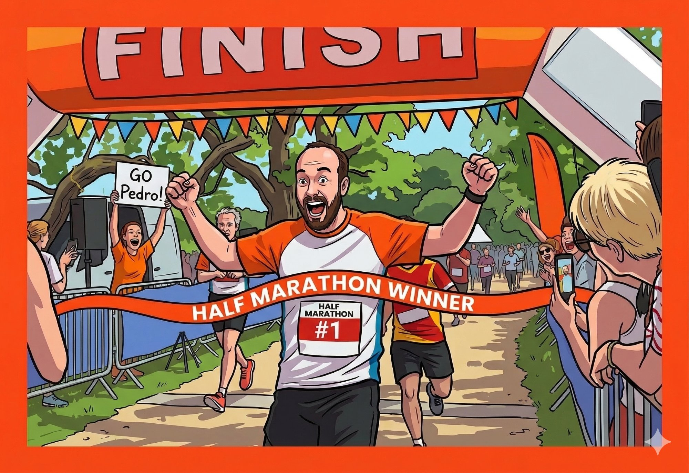

Track my runs in real time with GPS and live video. Cheer me on from your couch. Donate to a good cause. Judgement of pace is optional but expected.
I'm raising money for Restore, an Oxfordshire mental health charity that supports around 500 people a year towards recovery through coaching, training, and therapeutic activity. Every donation makes a real difference.